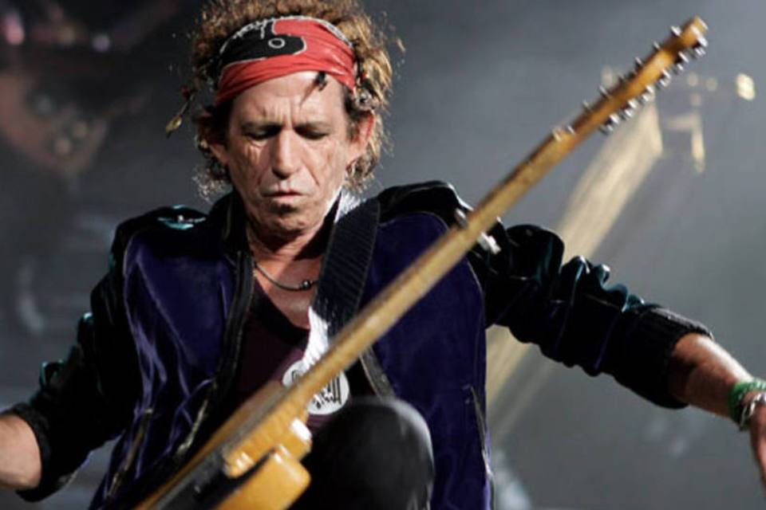

Keith Richards declara que esta sóbrio a mais de um ano (kkkkk, ha pronto).

Guitarrista do Roling Stones, após uma vida regada de drogas, declarou recentemente a revista Roling Stones (ironico não?) que esta limpo a mais de um ano. Sera esse o fim de uma lenda?
Toda crise conjugal tem momentos de atrito que parecem insuperáveis, mesmo que o casamento responda pelo nome de Rolling Stones. Mick Jagger tinha resolvido dar um tempo que se revelou decisivo: gravou dois álbuns solo (She’s the Boss em 1985 e Primitive Cool em 1987) e se recusou a sair em turnê com a banda para promover o fraquíssimo Dirty Work. Keith Richards e o restante do grupo se incomodaram, mas nada comparável a ver Jagger reunindo no início de 1988 outra banda, que incluía o guitarrista Joe Satriani, para fazer por sua conta uma série de shows no Japão. Havia passado do limite. Aquilo era traição. Foi o que sentiu Keith Richards, que, ciumento e irritado, também lançou em 1988 seu primeiro álbum solo, Talk is Cheap, um título que era uma crítica velada a Jagger, que não parava de promover a si mesmo esquecendo-se do restante do grupo.
Sua risada de pirata é inconfundível. Richards é tão hábil em tocar guitarra como em contar sua versão dos fatos. "Ei, cara, faz muito tempo, como vou lembrar?", diz ele, quando instigado a recordar. Mas, quando se esforça, expõe a camada imaculada: "Eu me lembro dessas sessões como algo muito engraçado. Eu queria que, se entrássemos em um estúdio, fosse algo natural. E assim foi". O guitarrista se desvia dos problemas que existiram naquelas sessões com grandes músicos como Steve Jordan, Charley Drayton, Ivan Neville, Mick Taylor, Maceo Parker e Waddy Wachtel, de quem acabaram por retirar o uísque no estúdio porque bebiam tanto ou mais que ele.

Talk is Cheap passou a ser visto como um ponto de não retorno para os Stones, mas a crise terminou em reconciliação sem se saber exatamente, como nos casamentos mais duradouros, se triunfou outra vez o amor ou outros interesses tão poderosos, como o dinheiro ou a falta de alternativas melhores. "Tocar nos Rolling Stones é mais fácil do que em muitas outras bandas. É mais fácil sempre se reunir com as mesmas crianças do que ficar mudando. Somos um conjunto de grandes músicos que fazem algo maior chamado banda. É uma química que só existe quando estamos juntos. Nós somos os Stones", diz Richards. "Estou com o mesmo entusiasmo que tinha em 1963... é essa a data em que começamos?", brinca. Sua memória é melhor para lembrar como o rock and roll entrou em sua vida. "Tinha um rádio muito ruim no meu quarto e tentava ligá-lo em um programa noturno que havia na Inglaterra. Fiquei petrificado ao ouvir uma noite Jerry Lee Lewis com Great Balls on Fire. E também Elvis Presley com Hound Dog, Com eles eu dava voltas pelo quarto. Em outra noite escutei Little Richard cantando e senti que estava dizendo algo só para mim. Algo como: 'Saia daí conheça muito mais sobre tudo isso'. Porra, claro que segui o conselho", conta com outra risada. Haverá vida para o rock and roll depois dos Stones? "Não cabe a mim dizer isso. Então, vou citar Bob Dylan: 'Não haverá nenhuma banda como os Rolling Stones. Eles não têm substitutos’. É um dos maiores elogios que recebemos. E acima de Bob ... não é tão fácil.”
Atualmente, a relação dos Stones, que preparam uma turnê pelos EUA em meados do ano e trabalham em outro disco de blues depois de Blues & Lonesome, lançado em 2016, parece atravessar um estado agradável. De entendimento. O guitarrista admite que falou com Jagger há duas semanas para definir a data da gravação. E também hoje, aos 75 anos, sua vida parece libertada de alguns desses velhos demônios. Richards afirmou há alguns meses que parou de beber. "Ah, sim, cara, grande tédio", confessa, mas ressalta: "Bom, veja, eu sou Keith Richards. Eu não saio por aí dizendo: ‘Não bebo” Bebo taças de vinho ou cervejas em almoços ou jantares. Aconteceu comigo antes com as drogas, como com a heroína. O que quero dizer é que não tomo mais café da manhã com heroína ou álcool. O experimento acabou", explica ele. "Mas, na minha vida, tenho sido incapaz de deixar alguma coisa", diz, rindo. Algum aprendizado em todo este tempo? "Eu deixei a filosofia também", diz com uma risada. "Eu amo minha família, meus filhos, meus netos ... Aprendi a ser avô. Isso é tudo. Minha filosofia de vida inteira pode ser resumida em que, afinal, eu aprendi a ser um avô”.